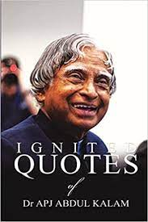

Subtotal Rs 957
You Have totaly 3 books in your shopping cart order it noe for best offer:
-
×

Think like a monk
The secret of how to harness the power of positivity and be happy now .
book
Rs 257 / only
-
×

The Hitchhiker's Guide to the Galaxy
Image result for The Hitchhiker's Guide to the Galaxy
Absurdity is a major theme in The Hitchhiker's Guide to the Galaxy
book
Rs 300 /only
-
×

Wings of Fire: An Autobiography of Abdul Kalam
The book covers his life before he became the President of India and commanded the armed forces.
book
Rs 400 /only